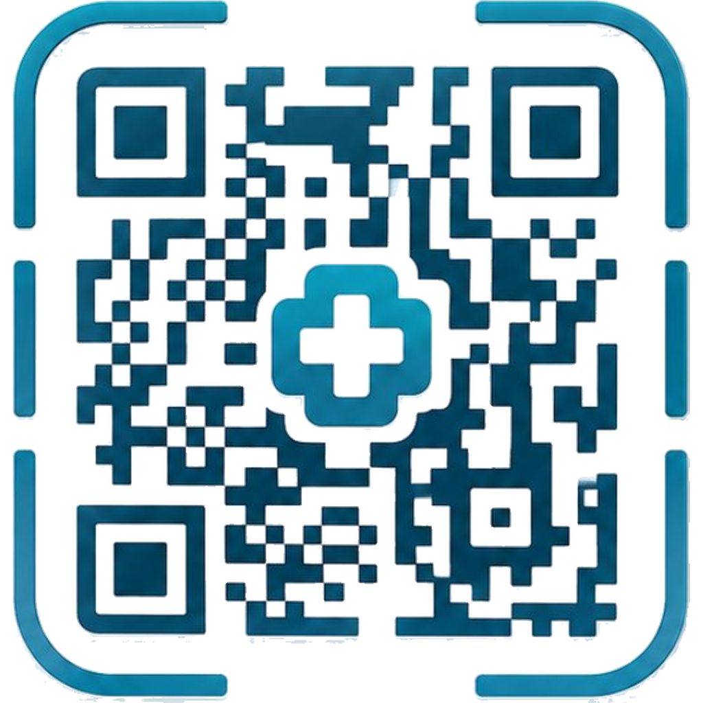

منصتك الصحية الرقمية في العراق. سجل طبي موحّد يصل إليه الطبيب بمسحة واحدة، بعد موافقة المريض، ولمدة محدودة.
الجمهور ثلاثة: المريض الذي يحمل رمزه، والطبيب الذي يمسح ويكتب، والمدير الذي يوافق على الأطباء ويدير الاشتراكات والمظهر. لغة الواجهة عربية واتجاهها من اليمين لليسار، والخدمة تتركّز اليوم في بغداد.
الملف الورقي يتفرّق بين العيادات. الطبيب يحتاج السجل في الزيارة، والمريض يحتاج ألا يصل أحد إلى بياناته بلا إذن.
| الوضع السابق | مع MED QR |
|---|---|
| ملفات ورقية أو صور متفرقة | سجل واحد: زيارات وملفات ووصفات وتشخيصات |
| الطبيب يفتح الملف بلا أثر واضح | جلسة وصول مسجّلة، والمريض يُبلَّغ فوراً |
| التعديل مفتوح بلا حد زمني | نافذة كتابة 10 دقائق بعد مسح QR |
| الحجز بالهاتف أو الحضور | طلب موعد من الخريطة أو ملف الطبيب |
| لا قناة رسمية بعد الزيارة | رسائل واستبيان متابعة داخل التطبيق |
| الجزء | لمن | ماذا يفعل | كيف يدخل |
|---|---|---|---|
| تطبيق العيادة | مريض وطبيب | QR، حجز، مسح، سجلات، رسائل، خريطة | واتساب OTP لرقم عراقي |
| لوحة الإدارة | مدير / مالك | موافقة الأطباء، الاشتراكات، المظهر، التدقيق | بريد وكلمة مرور |
| الخادم | كل الأطراف | المصادقة، البيانات، الرفع، الإشعارات، واتساب | JWT لسبعة أيام |
Flutter عربي للجوال وسطح المكتب، بشريط تنقّل مختلف حسب حجم الشاشة.
Flutter مستقل. مناطق الخريطة تُدار من تطبيق الطبيب لا من هذه اللوحة.
Node 20 وExpress وPostgreSQL 16 على المنفذ 8080.
| القدرة | مريض | طبيب | مدير |
|---|---|---|---|
| عرض السجل الطبي | سجله فقط | بعد جلسة وصول | كل المرضى |
| كتابة زيارة أو ملف | لا | 10 دقائق بعد مسح QR | لا من شاشة العيادة |
| حجز موعد | نعم | يؤكد أو يرفض | يرى البيانات |
| خريطة ومناطق | يختار المنطقة | ينشئ المنطقة ويضيف أطباء | عبر API |
| حذف الحساب من الإعدادات | نعم مع مستنداته | نعم مع ملفه المهني | ممنوع من هذا المسار |
| المسار | من يستخدمه | الخطوات |
|---|---|---|
| تسجيل الدخول | مريض وطبيب مسجّلان | رقم الهاتف → إرسال رمز واتساب → تحقق |
| تسجيل مريض | حساب جديد | إنشاء حساب → مريض → البيانات → الرمز |
| تسجيل طبيب | حساب جديد | تفاصيل ثم التفصيل المهني → تقديم للموافقة |
| دخول المدير | admin / owner | بريد وكلمة مرور في لوحة الإدارة |
صالح دقائق، مرة واحدة، بحد خمس محاولات. الرقم العراقي يُحوَّل إلى الصيغة الدولية قبل الإرسال عبر OTPIQ.
JWT لسبعة أيام ثم جلب الحالة دفعة واحدة من bootstrap: المستخدم، الأطباء، المناطق، المواعيد، الزيارات، الملفات، الإشعارات.
الشريط السفلي خمسة أزرار: الرئيسية، الأطباء، رمزي في الوسط، الرسائل، المزيد.
| الشاشة | الاسم | ماذا يفعل |
|---|---|---|
| الرئيسية | الرئيسية | ترحيب، اختصارات، موعد قادم، أطباء مميزون |
| البطاقة | رمزي الطبي | QR، فصيلة الدم، الحساسية، أدوية، جهة طوارئ |
| السجل | سجلاتي الطبية | زيارات، تشخيصات، وصفات، ملفات، محادثات، تقييم |
| الحجز | البحث عن طبيب | منطقة وتخصص وتاريخ وسبب → إرسال طلب |
| الخريطة | خريطة الأطباء | فلتر منطقة، عرض الملف، حجز موعد |
| المواعيد | مواعيدي | قيد المراجعة / القادمة / السابقة، إلغاء |
| الحساب | الإعدادات | مظهر، إشعارات، خروج، حذف نهائي |
المريض يعرض رمزه من «رمزي الطبي». الطبيب يمسح من الكاميرا أو المعرض، أو يبحث يدوياً. المسح يمنح الكتابة. البحث يفتح العرض فقط.
| القاعدة | المدة | الأثر |
|---|---|---|
| جلسة العرض | 24 ساعة افتراضياً | الطبيب يرى السجل؛ المدير يضبط الساعات |
| نافذة الكتابة | 10 دقائق من المسح | زيارة جديدة ورفع ملف طبي فقط |
| تعديل تشخيص | 24 ساعة للزيارة الأخيرة | لا يُعدَّل تاريخ قديم بعد إغلاق النافذة |
| إعادة المسح | تعيد ضبط العدّاد | تعود نافذة الكتابة من جديد |
الشريط السفلي: الرئيسية، المواعيد، مسح QR في الوسط، الرسائل، المزيد.
| الأداة | الاسم | العمل اليومي |
|---|---|---|
| اللوحة | لوحة التحكم | مرضى، زيارات اليوم، جلسات، طلبات بانتظار التأكيد |
| المسح | مسح رمز المريض | كاميرا أو معرض أو بحث ثم فتح السجل |
| المرضى | مرضاي | من زارهم، عرض السجل، مراسلة |
| الزيارة والملف | زيارة جديدة / ملف طبي | أعراض وتشخيص وخطة وأدوية، أو صورة وPDF |
| الجدول | التوفر والتقويم والإحصائيات | ساعات الأسبوع، أسبوعان قادمان، مرضى فريدون |
| المناطق | مناطق الخريطة | نقطة على الخريطة + اسم + أطباء |
| الصفحة العامة | صفحتي العامة | سيرة، شهادات، إنجازات، تقييمات، منشورات |
| الخطوة | من | التفاصيل |
|---|---|---|
| اختيار الطبيب | المريض | خريطة أو بحث أو ملف عام، مع فلتر منطقة |
| اختيار الوقت | المريض | فتحات من جدول التوفر + سبب الزيارة |
| القرار | الطبيب | تأكيد أو رفض من اللوحة أو المواعيد |
| الإلغاء | المريض | من شاشة مواعيدي |
| الإكمال | الطبيب | وسم الموعد مكتملاً بعد الزيارة |
المريض يختار منطقة بغداد فتنتقل الخريطة إلى مركزها ويظهر أطباؤها. الطبيب يرسم المنطقة من لوحة التحكم.
فلتر منطقة وتخصص، عرض الملف، حجز موعد. نفس المناطق تظهر في شاشة البحث على الجوال.
نقطة على OpenStreetMap، اسم المنطقة، تكبير، ثم إضافة أطباء. الحذف يعطّل المنطقة ويفك الربط.
خيط بين مريض وطبيب. الطبيب يرسل نصاً أو استبيان متابعة: عام، دواء، أو ألم.
منشورات توعية وإنجازات. تصنيفات: مؤتمر، ورشة، منشور علمي، أخبار.
وصول ممنوح، زيارة ملف، موعد، تشخيص، وصفة، ملف مرفوع.
| التبويب | المحتوى |
|---|---|
| الزيارات | التاريخ، الطبيب، الأعراض، التشخيص، الخطة، الأدوية، المتابعة |
| التشخيصات والوصفات | مستخرج من الزيارات التي فيها تشخيص أو دواء |
| الملفات | وصفة، مخبري، أشعة، رنين، طبقي، مستند، صورة — حتى 15 ميغابايت |
| المحادثات | خيوط الرسائل المرتبطة بهذا المريض |
| القسم | التحكم |
|---|---|
| المظهر | الوضع الليلي |
| رسائل واتساب | تنبيهات المواعيد والرسائل |
| البريد | ملخص دوري لنشاط الحساب |
| الحساب | تعديل الملف الشخصي وتسجيل الخروج |
| منطقة الخطر | حذف نهائي بعد كتابة كلمة «حذف» |
| الشاشة | أهم إجراء |
|---|---|
| لوحة التحكم | أعداد المرضى والأطباء والطلبات ومخطط الدخول |
| الأطباء | قيد المراجعة / موافق عليهم / معلّقون — موافقة وتعليق |
| تفعيل الاشتراكات | شهر، 3 أشهر، 6 أشهر، سنة — مبلغ وسجل |
| المرضى والمنشورات والمستخدمون | عرض، تعليق، أرشفة، تعديل ملفات |
| المظهر | اسم التطبيق، شعار، ألوان، خط، سمة افتراضية |
| التدقيق والتحليلات | دخول، مسح QR، حذف حساب، زيارات شهرية |
| الإعدادات | ساعات جلسة الوصول وساعات تعديل التشخيص |
| الطبقة | التقنية | الاستخدام |
|---|---|---|
| التطبيقات | Flutter وMaterial 3 وخط Tajawal | واجهة عربية للجوال وسطح المكتب |
| الرمز والمسح | qr_flutter وmobile_scanner | عرض QR ومسحه من كاميرا أو معرض |
| الخريطة | flutter_map وOpenStreetMap | مناطق بغداد |
| الخادم | Node 20 وExpress وJWT | REST ورفع ملفات حتى 15 ميغابايت |
| البيانات | PostgreSQL 16 — 22 جدولاً | مستخدمون، أطباء، مرضى، زيارات، جلسات، مناطق… |
| الدخول | OTPIQ واتساب | رمز دخول للعراق |
| الجملة | الدليل في المنتج |
|---|---|
| المريض يملك الإذن | QR في جيبه، وإشعار عند كل مسح |
| الطبيب يعمل في العيادة لا في أرشيف مفتوح | نافذة كتابة قصيرة بعد المسح |
| الحجز مربوط بالمكان | منطقة على الخريطة ثم طبيب ثم موعد |
| المنصة تُدار | موافقة، اشتراك، مظهر، تدقيق |
| الخروج نظيف | حذف الحساب يمسح السجلات والملفات معاً |